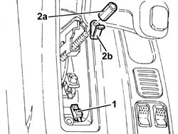
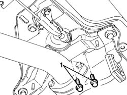
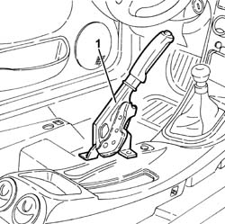

3380A10 handbrake lever - r+r
- Path
- Procedures > 33 BRAKING SYSTEM > 3380 HANDBRAKE > 3380A handbrake control and linkage > 3380A10 handbrake lever - r+r
- Kind
- repair procedure (removal / refitting; the operation number is the code)
- Applies to
- all engines; all production periods
- Interactive page
- https://sloeber94.github.io/elrnDB-a156/en/#/3238114
Applies to: all engines; all production periods
 Removing
Removing
 Refitting
RefittingPlace the car on the lifting bridge.
Disconnect battery (-) terminal
 | Name | Connector |
|---|---|---|
- | Battery |
Remove handbrake guard.
1. Disconnect connection from handbrake switch
| Name | Connector |
|---|---|---|
1 | Handbrake switch |
2. Unscrew adjustment nut (2a) and remove check spring (2b).

Applies to: all engines; all production periods
Lift the car.
1. Unscrew handbrake lever fixing screws.

Applies to: all engines; all production periods
Lower the car.
1. Remove handbrake lever together with handbrake switch.

Applies to: all engines; all production periods
Refitting
RemovingPut handbrake lerver back in its seat together with handbrake switch.
Lift the car.
Tighten handbrake lever fixing screws to the couple.
 | Fastening | Component | Ø | Value (daNm) |
|---|---|---|---|---|
- | Bolt | HANDBRAKE TRAVEL | M8 | 1.8 - 2.9 |
Lower the car.
Assemble check spring and tighten adjustment nut.
3380A04 handbrake - check travel
Reset handbrake switch connection
| Name | Connector |
|---|---|---|
- | Handbrake switch |
Mount handbrake guard.
Connect battery (-) terminal
| Name | Connector |
|---|---|---|
- | Battery |
Take the car off the lifting bridge.